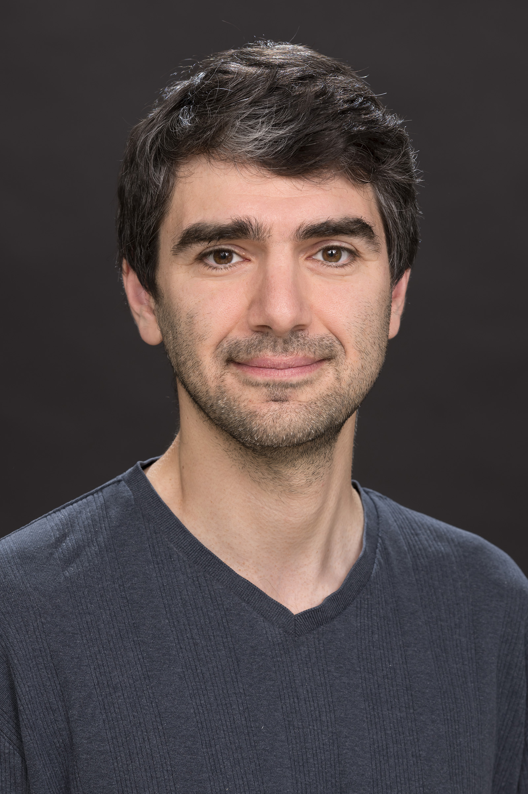

| Home | Current projects | COMPAS | To personal webpage |
|
I am a Professor of Theoretical Astrophysics at Monash University in Melbourne, Australia. I am interested in all aspects of theoretical astrophysics, with a particular focus on strong gravitational fields, compact objects, and gravitational-wave astronomy. I have co-authored more than 200 papers on the evolution of massive stellar binaries, gravitational-wave data analysis, astrostatistics, and related topics. My research group on massive binary eovlution -- also known as Team COMPAS -- includes a number of amazing students, postdocs, former students and postdocs, and other fantastic collaborators. Please contact me if you are interested in joining at any level! My current research focuses on the exploration of the evolution of massive binary stars into compact binaries as sources of gravitational-waves, astrophysical inference on gravitational-wave observations, and probes of general relativity in the strong-field regime. I am also interested in dynamics in galactic centres and globular clusters, tidal disruption events, kilonovae and GRB afterglows, and other things that go boom in the night. My interest in astrostatistics focuses on applying some of the sophisticated inference tools that my group has developed to carry out parameter estimation and model selection on gravitational-wave signals to other research areas, ranging from exoplanets to paleoclimatology. CV, including a publication list. Links to publications on
arXiv preprint server (or see
author's page);
ADS;
Google Scholar. Please see my personal page for photographs and some poetry (mostly translations). |  |